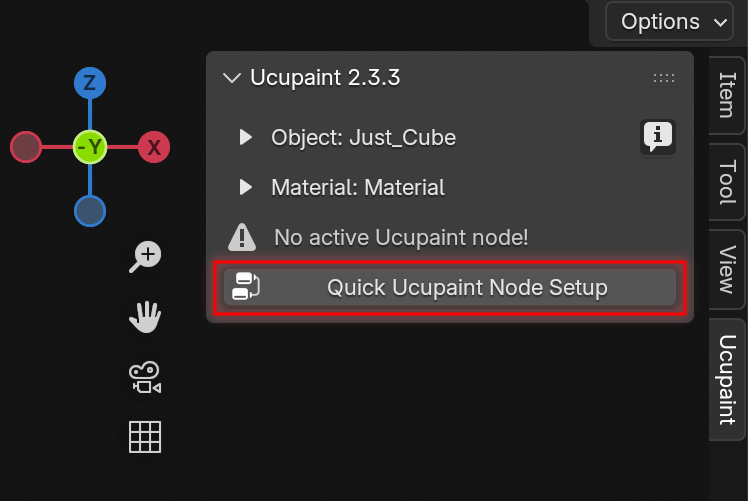
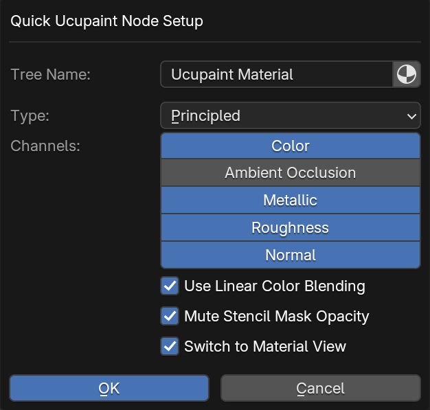
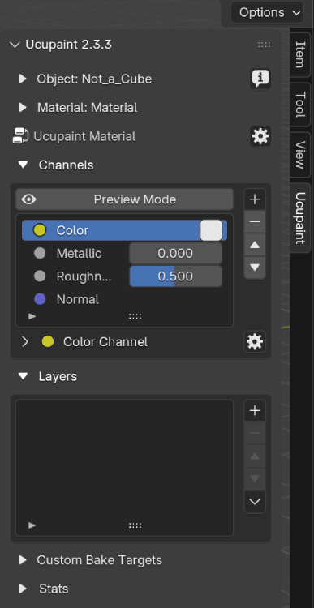
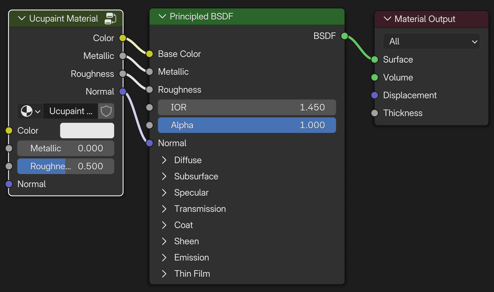
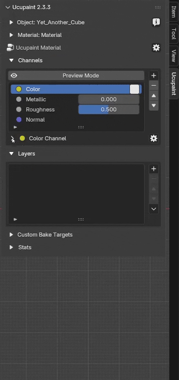

Ucupaint Setup
Before Setting Up Ucupaint
Assuming you've already installed the addon. The Ucupaint tab will appear in the N-panel when an object is selected. Before you continue, make sure to check the following:
- Make sure you are in Material Preview mode
- Make sure your object has been properly unwrapped
- Even though this addon supports more than just mesh objects, some features, such as baking operations, will only work with mesh objects.
Creating The Ucupaint Node
Ucupaint is a node group. You can create a new Ucupaint node directly in the Shader Editor.
| Creating new Ucupaint node in the Shader Editor |
In the Shader Editor, press Shift + A, go to Group, and select Ucupaint to add the node to your material. When adding a Ucupaint node in the Shader Editor, it will start with a single channel: Color. You can connect the Color output to any other node in your shader as needed. More details about channels are explained in channel page.
Quick Setup
You can also quickly set up the Ucupaint node in the 3D viewport by clicking the "Quick Ucupaint Node Setup" button.
|  |
|---|
| Quick setup button |
A pop-up menu will appear, giving you a few options for setting up the node. You can choose different shader types and add various channels.
|  |
|---|
| Quick setup options |
Here are the options available in the Quick Setup menu:
- Tree Name: The name of the Ucupaint node group (tree). Toggle the icon on the right to set the material name as the Ucupaint tree name.
- Type: The BSDF shader type that the Ucupaint node will connect to.
- Channels: The default set of channels included in the node (additional channels can be added later).
- Use Linear Color Blending: Enables linear blending between layers. This is more color-accurate but behaves differently than traditional 2D software like Photoshop.
- Mute Stencil mask Opacity: Disables the default texture paint overlay, allowing visibility of other layers in Material View.
- Switch to Material View: Automatically changes the viewport shading to Material View after setup.
The OK button completes the setup process. Ucupaint is now ready to use, and the channels, along with the layer list, will be visible.
|  |
|---|
| Ucupaint is now ready to use! |
If you open the shader editor, the quick setup creates a group node connected to the default shader (Principled BSDF), based on the channels you selected earlier. Avoid editing the contents of this group node manually, as it may cause critical errors.
|  |
|---|
| What quick setup actually creates |
Linking Ucupaint Node Tree
If you already have a node tree in the shader editor, the Ucupaint node will be placed between your existing nodes and the shader. It will automatically connect the existing channels through the Ucupaint node, keeping your current setup intact and working as before.
See the video below for a demonstration.
| Linking Ucupaint Node Tree with Existing Node setup |
Expand/Collapse Menu
Ucupaint’s UI may look simple at first, but it offers more options hidden within collapsible menus. Whenever you see a small triangle or arrow next to a section, it indicates that more settings can be expanded. You can see this behavior in the example GIF below.
|  |
|---|
| Expand and collapse additional options menus |